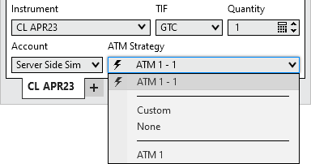
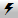
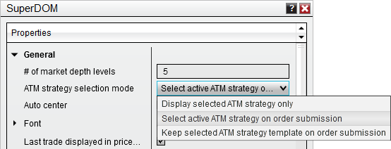
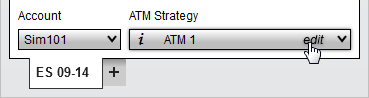
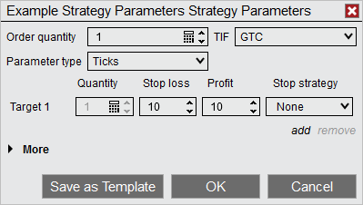
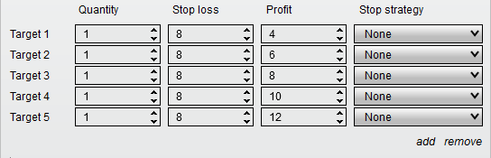
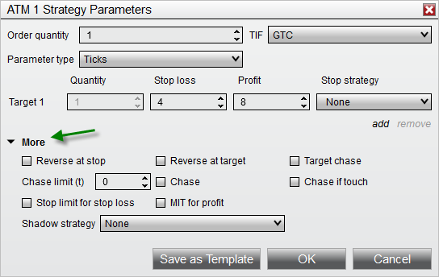

|
<< Click to Display Table of Contents >> ATM Strategy Parameters |


|
ATM Strategy Parameters
|
<< Click to Display Table of Contents >> ATM Strategy Parameters |
|
Majority of NinjaTrader's order entry interfaces house the same control for defining an ATM Strategy.
 Understanding the ATM Strategy control list options
Understanding the ATM Strategy control list options
The Strategy Control ListThe drop down list shown in the image below is very important to understand as it defines how your orders will be handled once submitted. There are three main categories of options that will be displayed in this drop-down list; None, Custom or strategy template names, and Active ATM Strategy Name(s).  NoneWhen this option is selected, any orders placed in the entry window will not be applied to an active ATM Strategy nor will it initiate a new ATM strategy.
Custom or ATM Strategy Template NamesWhen an ATM Strategy template name is selected, all of the parameters will update to reflect your pre-defined ATM Strategy, or when Custom is selected, you have the ability to define a new ATM Strategy on the fly. Once an order is submitted, the ATM Strategy parameters specified will be initiated when the order is partially or completely filled. Active ATM Strategy NamesAll active (live and working) ATM Strategies will be displayed and indicated by a lightning bolt  icon. If one is selected, any order submitted will be applied to the selected active ATM Strategy. For example, if you have an active ATM Strategy with a stop and target bracket for 1 contract, if you are filled on another contract, the fill is applied to this ATM Strategy and the stop and target bracket is automatically updated from 1 contract to 2 contracts.
Strategy Selection Mode OverviewThe behavior of the strategy control list can be controlled automatically by selecting an ATM Strategy Selection Mode.

When it comes to the automatic submission of Stop Loss and Profit Targets and how subsequent order fills are handled, there are two approaches:
1. Scaling into a position or out of a position should automatically update the order sizes of existing stop and target brackets 2. Scaling into a position should create a new set of stop and target brackets based on the new order fill price
If you always want to operate with approach number 1, then you will always want to have the ATM Strategy control list set to your active ATM Strategy when one exists. This is accomplished by setting the ATM Strategy Selection Mode to "Select active ATM strategy on order submission". If you would rather have new stop and target brackets submitted on a new fill, then set the ATM Strategy Selection Mode to "Keep selected ATM strategy template on order submission" and the strategy control list will not automatically set to an active strategy when one is created. |
 Understanding Stop Loss and Profit Target parameters (how to set your stop and target values)
Understanding Stop Loss and Profit Target parameters (how to set your stop and target values)
ATM Strategy ParametersSelect Custom to define a new ATM Strategy or select the saved ATM Strategy template and select "edit" in the ATM Strategy combo box as seen below.

In the image below there are parameters that define the ATM Strategy. This strategy is a single quantity strategy that will automatically place its target at 10 ticks above the average entry price and stop loss 10 ticks below.

Selecting the "add" will allow you to configure additional Targets for your ATM Strategy. You can add as many targets as you desire. Selecting "remove" will reduce the number of configured Targets that are configured.

For further reference, please look at the Strategy Examples located within the "ATM Strategy" page. |
 Understanding advanced ATM parameters
Understanding advanced ATM parameters
More OptionsTo access the Advanced options, click on the More text which will expand these additional ATM Strategy features.

From the Advanced Options section you can enable the Shadow Strategy, Auto Reverse, or Auto Chase features. |